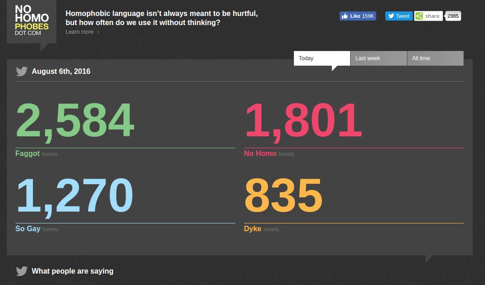
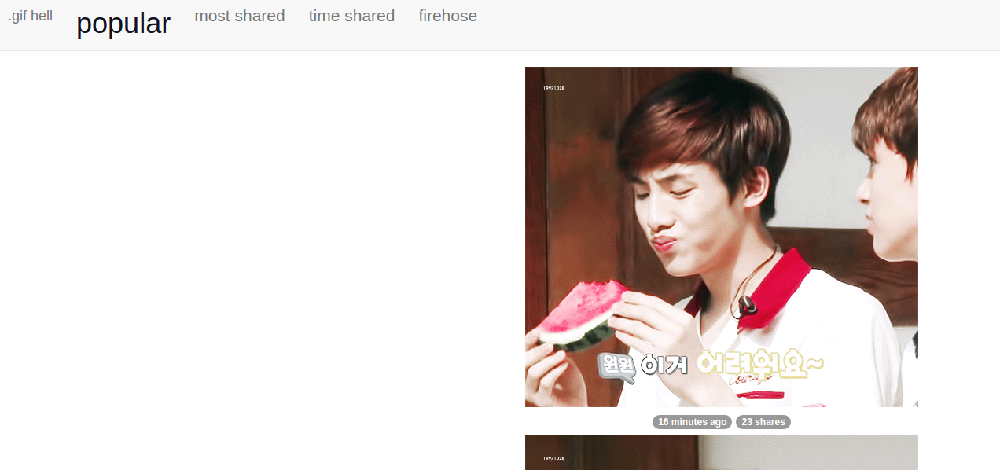
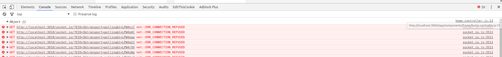
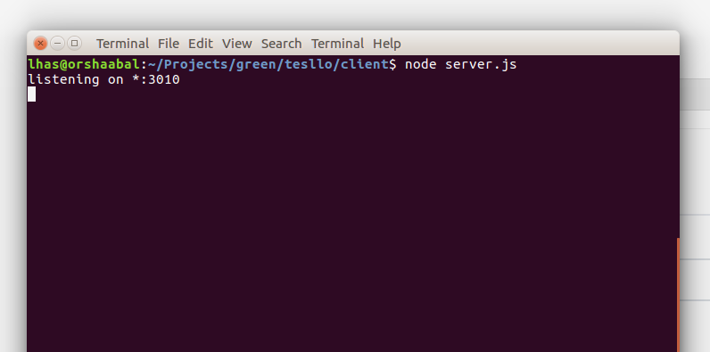
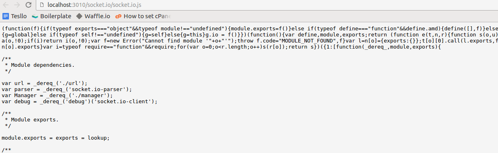

Aplicações em tempo real estão mais acessíveis do que nunca. Hoje em dia, qualquer site que se preze tem algo neste esquema. Por um simples motivo: você consegue fazer uma conversão de acessos enorme com isto.
Continue lendo o tutorial e você aprenderá:
- Fazer uma comunicação em tempo real entre cliente x servidor;
- Transmitir essas informações para os outros usuários no seu site;
- E de quebra aprender como configurar tudo isto dentro do Apache.
Legal, não? FrontEnd + BackEnd + DevOps numa tacada só. =D
Além dos sites que nós já conhecemos como Trello, Facebook, Twitter, tem uns outros cases muito interessantes que usufruem deste tipo de recurso.
Dê uma olhada neles se tiver tempo:
No Homophobes

URL: http://www.nohomophobes.com/#!/today/
Este site acompanha em tempo real tweets no dia de hoje que fazem referência a termos homofóbicos. Muito bacana do ponto de vista tecnológico porém triste do ponto de vista social, mas enfim. Palmas para os desenvolvedores!
PS: Feito com Angular1. =O
GIFHell

URL: http://gifhell.com/
Este site mostra os gifs mais populares do Twitter em tempo real.
Se você se convenceu de que é uma boa ideia tentar algo do tipo, continue lendo. :-)
Dependências do Socket.IO
Para nosso amiguinho funcionar, vamos precisar que ele rode em dois ambientes diferentes:
No lado do servidor
Ele vai rodar no servidor através do NodeJS e alguma instância de um HTTP Server.
99% das pessoas usam o ExpressJS para isto e é o que nós usaremos aqui.
No lado do cliente
É só mais uma biblioteca JavaScript. Vamos instalá-la com Bower.
Ela também é disponibilizada junto ao lado do servidor.
Porém pode ser meio complicado para você de carregá-la, pois você precisaria indicar o caminho absoluto para o servidor, e isso pode variar no ambiente de desenvolvimento para de produção, p.e.
Vamos começar pelo cliente pois acredito que seja mais fácil para os navegantes de primeira viagem:
No lado do cliente
Primeiro precisamos instalá-lo o client via Bower:
Instalando via bower:
bower install socket.io-client angular-socket-io --saveSe você estiver usando injeção automática do Bower (gulp-wiredep), irá reparar que o socket.io-client não carrega nada, só o angular-socket-io.
Para resolver isso, basta abrir o seu bower.json e adicionar esta propriedade:
overrides: {
"socket.io-client": {
"main": [
"socket.io.js"
]
}
}Assim ele irá carregá-lo.
PS: Se você não for usar o Angular, não precisa instalar o angular-socket-io.
Injetar dependência no angular
No nosso exemplo, vamos fazer essa comunicação dentro de um Single Page Application feito com Angular. Você pode fazer o mesmo com seu site mesmo que ele não use o Angular. Neste caso é somente uma demonstração pois é o meu framework predileto para front-end.
/* app.module.js */
(function(){
angular
.module('app', ['ui.router', 'btford.socket-io'])
})();Criar uma factory para lidarmos com o Socket.IO
src/app/shared/realtime/realtime.factory.js:
/* realtime.factory.js */
(function(){
'use strict';
angular
.module('app.realtime', [])
.factory('realtimeFactory', realtimeFactory);
realtimeFactory.$inject = ['socketFactory'];
function realtimeFactory(socketFactory) {
var ioConnect = io.connect('http://localhost:3010');
var realtimeSocket = socketFactory({
ioSocket: ioConnect
});
return realtimeSocket;
}
})();Se você fizer os passos acima direitinho, no seu console irá aparecer isso aqui:

No lado do servidor:
Crie um arquivo chamado server.js. Não faça nada nele ainda.
Senta que lá vem história…
Eu coloquei ele dentro da minha pasta do client/, pois eu vou criar um webserver SÓ para o SocketIO.
Na minha aplicação atual, o meu backend é em PHP, então eu não posso configurar o socketIO dentro dele, pois ele exige que o ambiente seja nodeJS, então vou criar um server só para ele.
No caso de uma aplicação PHP como a minha, temos diversas camadas:
- Web/ExpressJS (front-end e back-end):
Através do ExpressJS, nós apontamos ele para a pasta “dist/” do nosso SPA. Além disto, ele irá hospedar o SocketIO, e o prerender.io (no caso eu preciso fazer SEO na minha aplicação em Angular1). Ele poderia rodar numa porta 8080, p.e.
- API (back-end):
Usada pelo usuário final para recuperar/enviar dados do site para o banco de dados. Feita em Laravel, rodando em uma porta 80 através do Apache, p.e.
- Admin (back-end):
Usada pelo cliente, para administar o conteúdo do site no banco de dados. Mesmo que acima, feita em Laravel (são a mesma aplicação admin e api), rodando na porta 80 através do Apache.
Faz sentido?

Exemplos de <VirtualHost>
Se você tem um VPS/servidor dedicado, conseguirá facilmente fazer essas alterações no VirtualHost. Isso só não funciona em hospedagens compartilhadas.
Estou exemplificando com Apache, mas com Nginx seria mesmo esquema. Basta você pesquisar como efetuar “proxy reverse with nginx” no Google.
No caso da nossa app, o usuário final acessaria o site através do domínio http://abacate.com
O Apache que está configurado com este domínio, vai ter um VirtualHost assim:
<VirtualHost *:80>
ServerName abacate.com
ProxyPass / http://abacate.com:3010/
ProxyPassReverse / http://abacate.com:3010/
</VirtualHost>Ou seja, o domínio abacate.com vai apontar para abacate.com:3010, mas o usuário final vai se manter no mesmo domínio.
O http://abacate.com:3010/ vai ser o nosso server.js rodando.
No caso, seria o item Web/ExpressJS. Ele irá apontar para a pasta “dist/” do nosso app. E inicializar o SocketIO na mesma porta.
Já nossa API e Admin, vamos precisar de um VirtualHost para cada:
<VirtualHost *:80>
ServerName api.abacate.com
DocumentRoot "/home/root/public_html/laravel/public"
</VirtualHost><VirtualHost *:80>
ServerName admin.abacate.com
DocumentRoot "/home/root/public_html/laravel/public"
</VirtualHost>No meu caso, Admin e API são a mesma coisa então apontei para a mesma pasta.

Se tratando de domínios temos agora:
http://abacate.com/ - para usuários finais http://abacate.com:3010/ - para expressJS e socketIO http://api.abacate.com/ - API http://admin.abacate.com/ - Admin
Parece confuso, mas cada camada é importante, bem distinta e se comunica bem com a outra.
Isto ficaria mais simples se o back-end também fosse em NodeJS, pois aí não precisaríamos separar API/Admin/ExpressJS, seria tudo uma coisa só.
Mas como nossa vida é feita de gambiarras…

Voltando ao server.js
Vou colocar aqui um exemplo do ExpressJS com Socket.io. É o mínimo que você precisa para ter ambos funcionando.
Primeiro instale as dependências:
npm install express socket.io --saveAgora vamos preencher o server.js:
client/server.js:
var express = require('express');
var app = express();
var http = require('http').Server(app);
var io = require('socket.io')(http);
// Se estiver em desenvolvimento, servirá as pastas .tmp/, src/ e bower_components/
if(app.get('env') == "development") {
app.use(express.static(".tmp"));
app.use(express.static("src"));
app.use('/bower_components', express.static("bower_components"));
} else {
// Do contrário, se estiver em produção, servirá a pasta dist/
app.use(express.static("dist"));
}
// Todas as rotas apontarão para o index.html
app.get('*', function(req, res){
var fileName = (app.get('env') == "development") ? '/.tmp/index.html' : '/dist/index.html';
return res.sendFile(__dirname + fileName);
});
// Exemplo do Socket.IO que nós vamos trabalhar
// Toda vez que algum usuário final criar um job, nós receberemos aqui
// E emitiremos para todos os sockets online que o servidor acabou de salvar um novo job
io.on('connection', function(socket){
socket.on('client:created:job', function(data) {
io.sockets.emit('server:created:job', data);
});
});
// Iniciando servidor
http.listen(3010, function(){
console.log('Escutando em *:3010');
});Se rodarmos no terminal agora:
node server.js
Se abrirmos http://localhost:3010/socket.io/socket.io.js:

Isso significa que nosso servidor está pronto.
Definindo próximos passos
Vou usar como exemplo o seguinte:
Um site de vagas de emprego. Na home, temos um espaço destinado para as vagas mais recentes. Esta área se parece com isso:
As próximas etapas serão:
- Na página de cadastro da vaga, após a vaga ser cadastrada com sucesso e recebida pela API, vamos emitir um evento de “job:created”.
- Na página da Home, dentro do componente de Oportunidades Mais Recentes, vamos observar se ocorre alguma transmissão do evento “job:created”. Se houver, vamos atualizar a listagem dos jobs.
Observação (caso você esteja usando BrowserSync)

Caso você esteja usando o BrowserSync, precisamos fazer uma adaptação nele para ele funcionar sem atritos com o Socket.IO (por que o BrowserSync naturalmente já usa ele).
Ao invés de você inicializar um servidor do BrowserSync, você rodará ele como proxy.
Se você está usando algum gerador do Yeoman ou algo parecido, provavelmente você vai ter de mudá-lo.
No meu caso, eu uso o FountainJS. A configuração do meu BrowserSync fica em: conf/browsersync.conf.js
// Antigo
module.exports = function () {
return {
server: {
baseDir: [
conf.paths.tmp,
conf.paths.src
],
routes: {
'/bower_components': 'bower_components'
}
},
open: false
};
};
// Novo
module.exports = function () {
return {
proxy: {
target: "localhost:3010",
ws: true
},
open: false
};
};
Além disto, se você quiser fazer testes no desenvolvimento, você precisa desabilitar o Ghost Mode.
O Ghost Mode é o que faz ele replicar os cliques, scrolls da tela, para todas as conexões.
O problema disso é que se você tentar abrir a home numa aba, e abrir o cadastro da vaga em outra aba, vai dar merda, afinal, as telas estarão sincronizadas.
Caso você por este problema, veja se na config. do seu BrowserSync não tem uma linha assim:
browserSync.use(spa());Se tiver, comente-a. Isto irá desabilitar o ghost mode. Quando você quiser reativar o esquema, basta descomentá-la.
Feito a adaptação para o BrowserSync, vamos seguir para…
Adaptação do Gulp
Precisamos de um responsável para iniciar o nosso server.js.
No ambiente de desenvolvimento o responsável é o: Gulp
No ambiente de produção o responsável é o: PM2 (ou outro automatizador de nodeJs para amb. de produção)
Vamos criar uma task para o nosso Gulp, para que ele possa iniciar o server:
Crie o arquivo gulp_tasks/server.js (ou coloque dentro do gulpfile):
const path = require('path');
const gulp = require('gulp');
const conf = require('../conf/gulp.conf');
const exec = require('child_process').exec;
gulp.task('server', server);
function server() {
exec('node server.js', function (err, stdout, stderr) {
console.log(stdout);
console.log(stderr);
cb(err);
});
}Se você fizer um teste rodando gulp server e abrir no seu navegador http://localhost:3010 irá funcionar.
Agora precisamos incluir esta task server, na fila de tasks quando rodamos gulp serve (lembra, é só pro amb. de desenvolvimento).
Abra o gulpfile.js. Procure a linha que defina a task do serve. A minha estava assim:
// Antigo
gulp.task('serve', gulp.series('clean', 'ng-config:serve', 'partials', 'inject', 'watch', 'browsersync'));
// Novo
gulp.task('serve', gulp.series('clean', 'ng-config:serve', 'partials', 'inject', 'watch', 'browsersync', 'server'));Ou seja, depois dele fazer todo o processo de servir o app, ele irár rodar o server.js (no caso o Express).
Pronto. Gulp configurado!

Se você abrir http://localhost:3000 verá o nosso app rodando com o BrowserSync.
Se você abrir http://localhost:3010 verá o nosso app direto no ExpressJS.
Chega de configurar coisas, né? Vamos tocar nas regras de negócio.
Dizendo o app o que fazer quando novas vagas forem cadastradas
Se você reparar, no server.js tem um trecho assim:
socket.on('client:created:job', function(data) {
io.sockets.emit('server:created:job', data);
});Isso significa que:
Toda vez que nosso socket observar um evento novo em client:created:job, ele irá emitir um outro evento denominado server:created:job.
Por que isso é necessário?
Pois nós não podemos emitir um evento novo e tratá-lo diretamente no cliente. Precisamos dessa mãozinha através do servidor.
A variável data vai retornar o que nós quisermos transportar no evento.
Seja um ID, um objeto JSON, ou um simples booleano (verdadeiro/falso).
No nosso caso, será um simples booleano, for simplicity’s sake.

Editando o nosso controller de cadastro de vagas
Digamos que este seja o controller da nossa página de cadastro de vagas:
PS: Observe que eu já injetei o realtimeFactory que criamos lá em cima. :-)
/* create.controller.js */
(function() {
angular
.module('app.job.create', [])
.component('tesJobCreate', {
templateUrl: 'app/components/job/create/create.html',
controller: CreateController
});
CreateController.$inject = ['JobService', 'realtimeFactory', 'Notification', '$cookies', '$state'];
function CreateController(JobService, realtimeFactory, Notification, $cookies, $state) {
var vm = this;
var job = $cookies.getObject('job');
vm.job = job;
vm.create = create;
/* Função chamada quando o formulário é enviado (ng-submit="$ctrl.create($ctrl.job)", por exemplo) */
function create(job) {
// Salva a vaga através de um Service, e define os callbacks
JobService.create(job).then(success, error);
/* Callback de sucesso - será acionado caso a vaga tenha sido salva */
function success(result) {
// Notifica o usuário
Notification.primary('O seu anúncio foi criado com sucesso!');
// Redireciona para a home
$state.go('home');
}
/* Callback de erro - será acionado caso a API retorne algum erro ou a conexão tenha sido perdida */
function error(error) {
// Notifica o usuário
Notification.error('Ocorreu um problema ao cadastrar a vaga. Tente novamente.');
}
}
}
})();Vamos colocar na função create(), dentro do callback de sucesso, a seguinte linha:
/* Callback de sucesso - será acionado caso a vaga tenha sido salva */
function success(result) {
// Transmite um evento para o servidor indicando que uma vaga foi criada com sucesso por um cliente
realtimeFactory.emit('client:created:job');
// Notifica o usuário
Notification.primary('O seu anúncio foi criado com sucesso!');
// Redireciona para a home
$state.go('home');
}Pronto, o nosso servidor já irá identificar que vagas foram criadas e vai emitir o tal do server:created:job (indicando que ele fez a parte dele também).
É hora de tratarmos este evento do servidor!
Atualizando a lista de vagas recentes
No caso do nosso exemplo, a lista de vagas recentes é um componente só para isto (como deve ser feito, não me venha com apps não-componentizados para cima de mim).
O nosso componente está assim até então:
PS: Observe que eu já injetei o realtimeFactory que criamos lá em cima. :-)
/* recent-jobs.controller.js */
(function(){
'use strict';
angular
.module('app.job.RecentJobs', [])
.component('tesRecentJobs', {
templateUrl: 'app/components/job/recent-jobs/recent-jobs.html',
controller: RecentJobsController
});
RecentJobsController.$inject = ['JobService', 'realtimeFactory'];
function RecentJobsController(JobService, realtimeFactory) {
var vm = this;
var jobs = undefined;
vm.jobs = jobs;
activate();
function activate() {
JobService.getAll().then(success, error);
function success(result) {
vm.jobs = result.data.jobs;
}
function error(error) {
console.log(error);
}
}
}
})();Observe a função activate(). Ela é acionada toda vez que nosso componente é carregado.
Se você deixar seu código sempre bem estruturado, esta vai ser a parte mais fácil para você.
Pelo bem da simplicidade, mais uma vez, vamos fazer com que quando seja cadastrado uma nova vaga, o componente de vagas inteiro se atualize, ou seja, vamos somente chamar a função activate() de novo.
Se fôssemos fazer algo mais caprichado, o ideal seria que os dados da vaga nova se transportassem dentro do evento e você ao invés de atualizar o componente de novo,apenas desse um vm.jobs.push(job);
O problema de dar um .push(), é que você tem que observar caso o número limite de itens dentro do array não ultrapasse o limitado pelo layout, se não vai ficar algo enorme.
Depois da função activate, vamos adicionar o observador para nosso evento disparado pelo servidor:
realtimeFactory.on('server:created:job', function(ev, data) {
activate();
});Ele faz exatamente o que eu expliquei ali em cima. Toda vez que houver um evento de server:created:job, nós iremos chamar a função activate(), que irá atualizar a lista de jobs.

Concluído!
Simples, não?
Agora faça um teste aí, tente “”““cadastrar uma nova vaga”“”” (use o seu projeto atual de teste), e você verá tudo funcionando.
O ideal aqui para vocês visualizarem o funcionar seria um vídeo ou uma URL de teste, mas tive uns contra-tempos que me impedem no momento de fazer isso.
Espero que gostem da explicação e desse caso de uso diferente do de chat.
Ainda assim é um caso de uso simples, beeeem simples, antes que vocês reclamem =P.
Mas pode te fazer enxergar como os sockets funcionam de uma forma melhor e possa te fornecer alguns insights bacanas para seu app.
Além de é claro, você aprender como funciona na prática a organização de VirtualHosts com aplicações que rodam em portas diferentes. Esse é um conhecimento útil quando você trabalha com NodeJS, Ruby, Python, entre outros, no lado do servidor.
Os desenvolvedores do PHP tendem a estar acostumados com o Apache funcionando na porta 80 e fazendo toda a mágica acontecer por trás.

Até a próxima! :D